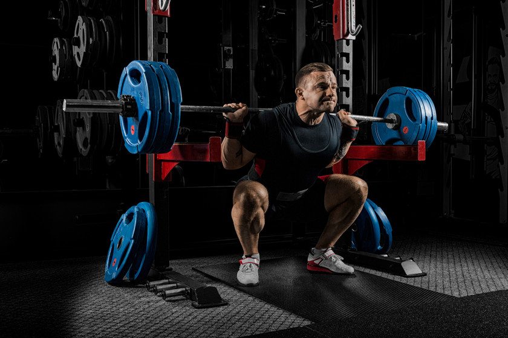
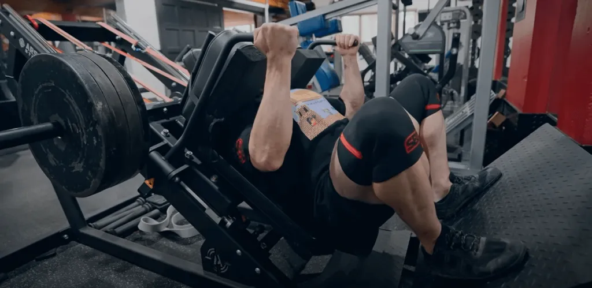
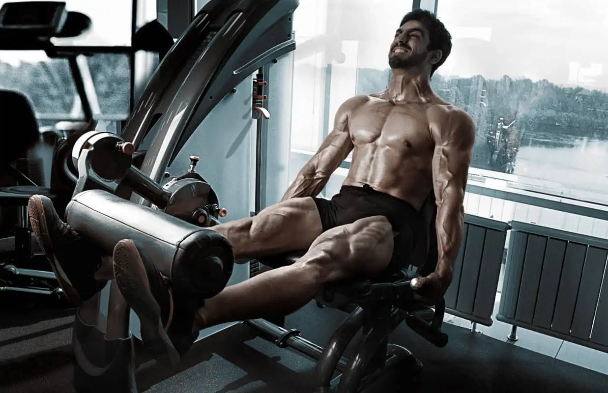
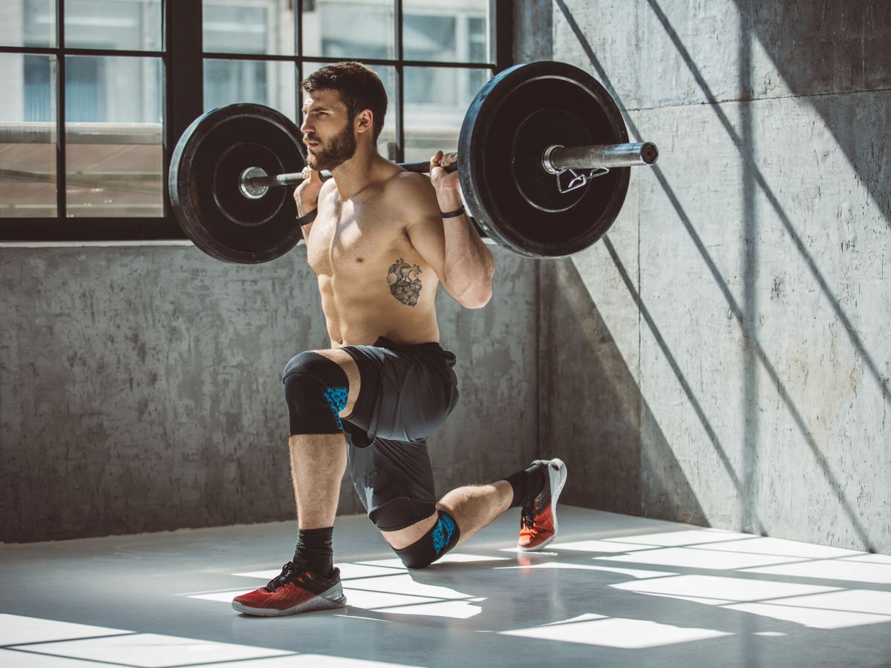

Los cuádriceps son el grupo muscular más grande y más fuerte del cuerpo humano, ubicado en la parte frontal del muslo y son los principales extensores de la rodilla. Están formados por cuatro músculos principales: el recto femoral, el vasto lateral, el vasto medial y el vasto intermedio. Es mi músculo favorito y uno que aporta muchísimo a la estética del cuerpo humano. Los cuádriceps son fundamentales para muchas actividades diarias, como caminar, correr, subir escaleras y levantar objetos pesados. También son cruciales para la práctica de deportes que requieren movimientos explosivos de piernas.
El mejor ejercicio, de todos los ejercicios, de todos los músculos, de todos los tiempos (palabra del editor a cargo). La Sentadilla Libre, con peso obviamente, consiste simplemente en hacer una sentadilla normal en el suelo pero agregandole peso extra. Es un ejercicio que trabaja principalmente los cuádriceps pero también trabaja muy bien los glúteos y tambien los isquiotibiales. Este ejerciocio debe estar si o si en tu rutina de pierna, si puedes haz esta varieante, si se te dificulta o te incomoda debido a alguna complicacion anatomica puedes hacer prensa o en alguna máquina que se te acomode.
Esta variante de sentadilla es más enfocada en los cuádriceps. Es un gran ejercicio, si quieres trabajar los cuádriceps de forma más específica. Haz este ejercicio si por ejemplo ya haz hecho peso muerto con mucho peso para evitar sobrecargar demasiado la columna vertebral. No te recomiendo que hagas este ejercicio habiendo hecho ya sentadilla libre en el mismo día, a menos que tomes anabólicos o tengas una resistencia excepcional.
Un ejercicio plenamente enfocado en el cuádriceps, a diferencia de los demás ejercicios de la lista. Ideal para hipertrofia, aunque no recomendado para principiantes, tampoco intermedios, debido a que es más de lo necesario para hipertrofiar y fortalecer el músculo. Haz este ejercicio al final de tu rutina de cuádriceps si eres avanzado o un intermedio que esta pasando por una ruptura amorosa.
Este ejercicio es la mejor variantede sentadilla unilateral por encima de las estocadas y la sentadilla búlgara por varias razones, entre ellas su seguridad y su facilidad de realización. Al ser más segura evitas lesiones y dolores articulares, los cuales pueden ser extremadamente perjudiciales para tu desarrollo muscular. Este ejercicio, al ser "unilateral" es ideal para corregir descompensaciones entre un cuádriceps y el otro. Te recomiendo hacerlo con mancuernas para más estabilidad y seguridad.
